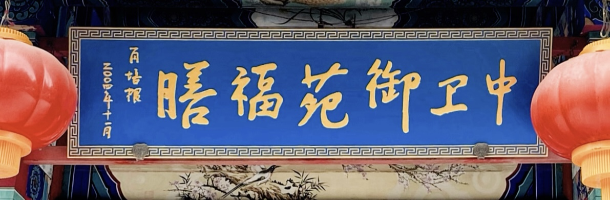

荣誉墙
数十载匠心传承，荣获多项社会及业界肯定，非物质文化遗产见证我们的底蕴与实力。

非物质文化遗产
传统御膳技艺传承保护单位

老字号荣誉
传统膳食品牌与老字号荣誉认可

行业荣誉资质
中医药食同源与特色康养餐饮认证

品牌牌匾
中卫御苑福膳官方指定标识牌匾
源于国家级药用植物研究所，承载非遗底蕴，开创“鲜药入膳”健康食疗新时代。
“御苑福膳”隶属于中国医学科学院·北京协和医科大学药用植物研究所（简称“药植所”）下属企业——北京中卫神州生物科技有限公司，成立于2002年。依托国内唯一的药用植物资源保护与开发专业机构，打造定位于全民康养膳食的知名餐饮品牌。
我们在药植所专家、药理师、国医大师、营养师及烹饪大师的科学应用指导下，将博大精深的中医药文化融入日常膳食，倾力构建餐桌健康工程，为公众体质改善贡献科学有效的方案。
作为“中国鲜药入膳第一家”，我们创新融合了《中医药饮食理论》、《中医服食养生理论》与《食疗理论》，开创了针对男女老幼、四季二十四节气的时令方、养生方与食疗方，让药膳真正走进广普人群的日常生活。
御苑福膳最大的特色在于一个“鲜”字。我们直接依托药植所内的鲜药材基地与大棚现场，做到现采现用，保留药材最为本真、活跃的生命力。
在御苑福膳，就餐不仅是一场味觉盛宴，更是一次文化洗礼。餐厅坐落于百草花园之中，设有独具特色的百草长廊与富有中药文化韵味的包间。
堂食讲解服务：每一道鲜药膳上桌，均有专业讲解——带您亲手认识食材，了解其背后的中药典故与养生机理，真正做到“品其味道，知其文化”。
数十载匠心传承，荣获多项社会及业界肯定，非物质文化遗产见证我们的底蕴与实力。
传统御膳技艺传承保护单位
传统膳食品牌与老字号荣誉认可
中医药食同源与特色康养餐饮认证

中卫御苑福膳官方指定标识牌匾
御苑福膳“药食同源”与“鲜药入膳”新实践获得央视、人民网及多家主流媒体的深度报道。
无数社会名流与业界泰斗曾莅临御苑福膳，留下珍贵的瞬间。

原最高人民检察院检察长、第九届全国政协副主席张思卿莅临视察指导

海南省委原书记卫留成莅临中卫御苑福膳考察指导

原国家卫生部部长高强莅临视察，并对药膳传承工作给予高度肯定

原卫生部部长张文康与中国民族卫生协会专家一行莅临考察交流

毛泽东主席原机要秘书张玉凤女士及丈夫刘爱民先生莅临品鉴御膳

中国工程院原副院长、中国医学科学院原院长刘德培院士莅临指导

中国工程院院士、药植所名誉所长、御苑福膳指导专家肖培根亲临指导

著名病毒学家、中国医学科学院原院长、“脊灰疫苗之父”顾方舟院士莅临

中国工程院院士、国医大师王琦教授亲临指导药膳学术应用

左铁镛院士（中）与李京文院士（右）莅临中卫御苑福膳指导

联合国国际生态生命安全科学院院士黄正明教授光临指导药膳保健

国宴烹饪大师、原钓鱼台国宾馆副总厨师长侯仲华大师莅临技术指导

著名国宴大师、特级厨师孟宪斌莅临，交流国宴膳食设计与养生文化

北京电视台著名主持人贺贝奇女士莅临御苑福膳主持与文化交流

西藏活佛、奥地利珠宝商、俄罗斯远东大学校长及夫人一行贵宾莅临

联合国北北合作组织全体主席团成员及蒋明君主席光临考察指导

中国烹饪协会原会长、全聚德原董事长姜俊贤莅临交流与合作

御苑福膳董事长参加中国民族卫生协会第一次会员代表大会并留影

中卫御苑福膳承办的中药药膳学术研讨与行业专家品鉴会现场合照